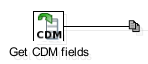
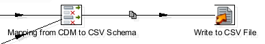

The output transformation to create the CSV file with valid Symplectic schema data comprises a number of steps.

Figure 5.3. Get CDM fields
First the transformation reads in the input data output by the Read HR database transformation using the Get CDM fields step.
Figure 5.4. Set Is Academic field
Secondly, a new field Is Academic is created. Its value is determined by the value of the JOB field. If the value of this field is "Research only", "Teaching only" or "Research and Teaching", then the new Is Academic field is set to "Y". If the value is equal to "Not teaching and/or research", then the value is set to "N". Any other value for this field is considered an error and so results in a log entry.

Figure 5.5. Write output to CSV
The Mapping from CDM to CSV Schema step then completes the mapping of the data. This is then output as a CSV file by the final step in the transform.